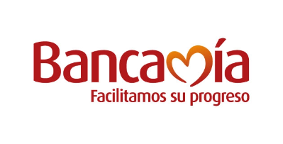
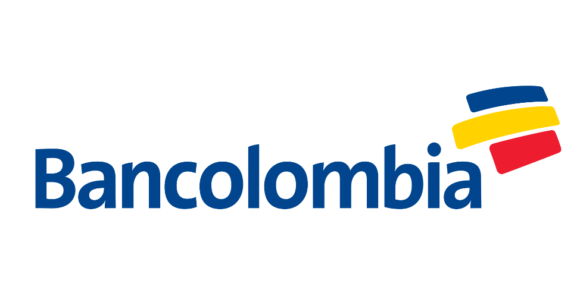
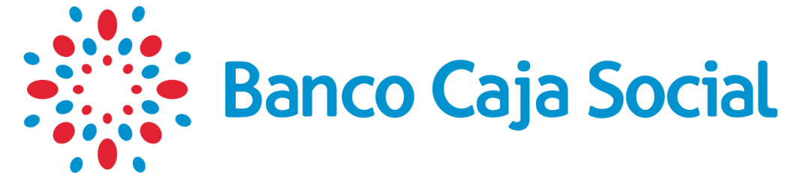

Consulta tu estado del
Ingreso
Solidario
Por favor ingresa tus datos personales para revisar el estado de entrega
de tu ingreso.
Ingreso Solidario
Debido a la situación generada por el COVID-19,
el gobierno nacional aportará a las familias más afectadas
y que no pertenezcan a ningún programa social,
un subsidio por $160.000
¿Qué es el ingreso solidario?
Es un esquema mediante el cual se entrega una
transferencia monetaria en favor de los hogares
en situación de pobreza y vulnerabilidad que
no sean beneficiarios de programas sociales del Estado
Los hogares en condición de pobreza
y vulnerabilidad, afectados en sus
ingresos como consecuencia de la pandemia del coronavirus,
que no hagan parte de los programas sociales
"Familias en Acción","Colombia Mayor","
Jovenes en Acción"y"Devolución IVA"
podrán acceder a esta medida social.
Etapas de Entrega
Etapa 1ㅤㅤㅤㅤㅤㅤㅤㅤㅤㅤㅤㅤㅤEtapa 2ㅤㅤㅤㅤㅤㅤㅤㅤㅤㅤㅤㅤㅤEtapa 3
Desde el 7 de Abrilㅤㅤㅤㅤㅤ9 de Abril al 18 de Abrilㅤㅤㅤㅤ18 de Abril al 25 de Abril
Bancos Autorizados
   Preguntas FrecuentesPreguntas Frecuentes
1
Yo había salido como beneficiaria en la primera fase y ahora no aparezco
en el listado de benefiiciarios ¿Es decir, ya no recibiré el beneficio?
Estamos actualizando el listado de beneficiarios que recibieron el giro.
Si encontró su nombre en la primera etapa y está plenamente
identificado, no ha perdido su beneficio.
2
¿Por qué no aparezco en el listado de ingresosolidario.prosperidadsocial.gov.co?
Estamos actualizando el listado de beneficiarios que recibieron el giro.
Si encontró su nombre en la primera etapa y está plenamente
identificado, no ha perdido su beneficio.
3
¿Qué debo hacer porque me llegó el mensaje de que soy beneficiario y no he recibido el pago?
Si usted fue informado de que es beneficiario del programa mediante un mensaje de texto
enviado por la entidad financiera en la cual tiene una cuenta o depósito activo,
comuníquese con esa entidad financiera para averiguar cómo acceder a los recursos del Ingreso Solidario.
Si usted no tiene una cuenta o depósito con el sistema financiero, y es elegido
dentro del programa Ingreso Solidario, pronto recibira un mensaje con
las instrucciones para hacer la apertura de una cuenta digital.
4
Consulté en la página web y soy beneficiario, pero aún
no me han llamado ni he recibido mensaje de texto ¿Qué debo hacer?
Si usted encontró su nombre y cédula en la base de beneficiarios y no ha recibido un mensaje de texto, significa que hace parte
de un ciclo posterior de pagos. Durante esta etapa, las entidades financieras se contactarán con usted
para darle las indicaciones de cómo recibir el giro o hacer la apertura de un depósito simplificado a través de su celular.
5
¿Qué debemos hacer los que somos beneficiarios, pero no tenemos celular o cambiamos de número?
Prosperidad Social está trabajando con diferentes organizadores y
fuentes de datos para ubicarlo y contactarlo.
Lo invitamos a consultar periódicamente la página.
¿Tienes más preguntas?
No dudes en contactarnos para poderte dar la información que necesites
Contáctanos
Linea Gratuita Nacional: 01-8000-951100
Linea de atención Paga (1) 518 8811,
Conmutador: (57+1) 514 2060
ingreso.solidario@prosperidadsocial.gov.co
Prosperidad Social
Carrera 7 No.27 - 18 / Bogota D.C., Colombia
Código Postal: 110311
Horario de Atención: 8:00 a.m. - 2:00 p.m.